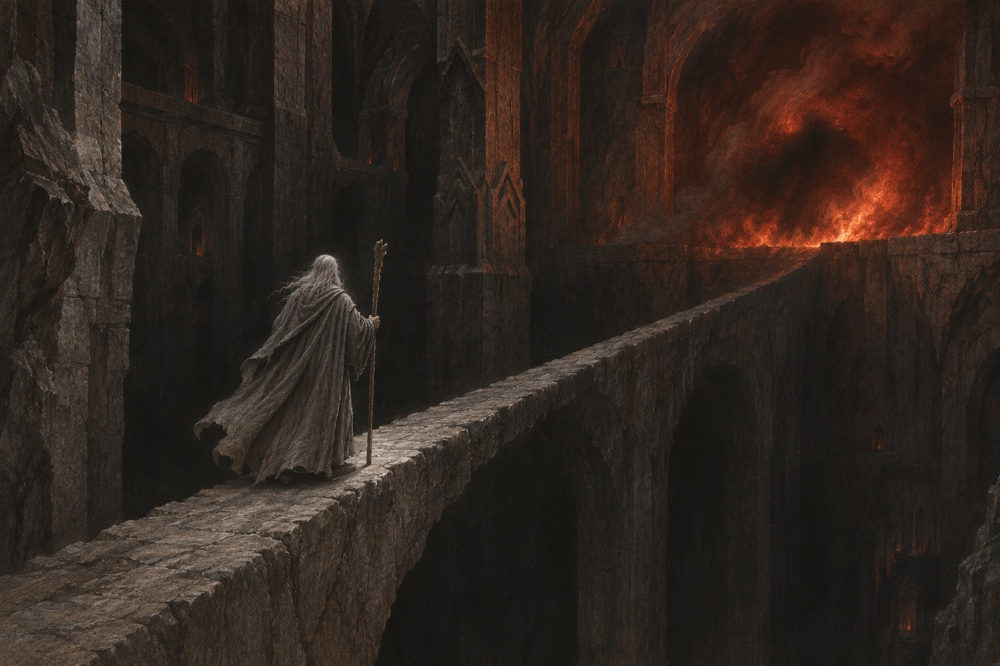
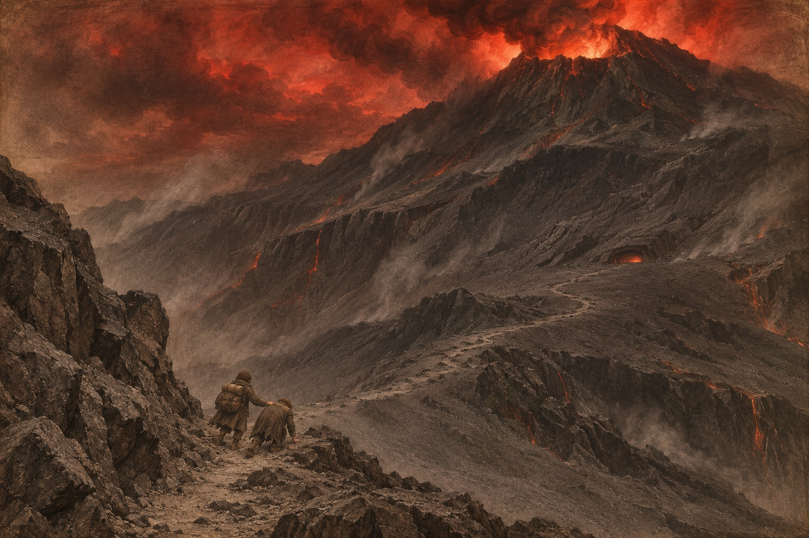
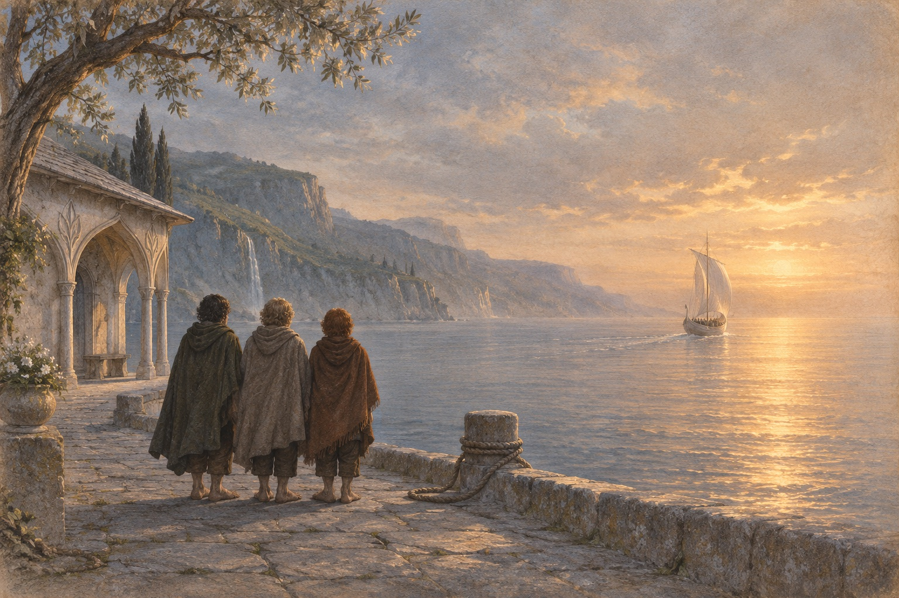

一枚保存着主人的戒指
索隆铸造至尊魔戒，把自身力量与统治欲注入其中。最后联盟击败索隆后，伊熙尔杜将魔戒留下；它后来辗转落入咕噜手中，又被比尔博带离地下。战争结束并没有使危险消失，戒指仍在寻找返回主人的机会。这个来历决定了护戒远征的目标：保存它或用它制敌，都无法真正结束威胁。
生日宴后的遗产
比尔博举办一百一十一岁生日宴，借魔戒隐身离开宾客，然后准备启程远行。甘道夫察觉他对戒指异常执着，劝他将其留下。比尔博最终放手，佛罗多继承袋底洞与这件看似平常的遗物。夏尔仍然热闹安宁，新的持有者尚不知道，自己接下的是一个远超家族财产的负担。
炉火中的文字
多年调查后，甘道夫在夏尔确认这枚戒指就是至尊魔戒。火焰显出的铭文与咕噜的经历，使比尔博的冒险同索隆的回归连接起来。佛罗多意识到袋底洞已经不再安全，答应离开家园。山姆偷听到谈话后也被纳入旅程，护戒由此从一个人的秘密，变成两个霍比特人的共同责任。
走出熟悉的田野
佛罗多以搬家为掩护离开袋底洞，山姆、梅里和皮平与他同行。黑骑士的追踪让乡间道路变得危险，伙伴们决定穿越老林。在柳树老人的陷阱中，他们险些无法脱身，幸被汤姆·邦巴迪尔救出。边界之外并非只有索隆的爪牙，还有比夏尔记忆更古老、不能凭常识解释的力量。
跃马客栈
四个霍比特人在布理的跃马客栈落脚。佛罗多不小心戴上魔戒，在满屋人面前消失了一瞬。一个叫“大步佬”的游民把他们的房间换到别处，夜里黑 riders 破门而入，砍碎了床铺上的枕头。
从古冢中带出的剑
离开邦巴迪尔的住处后，雾气使四名霍比特人失散，他们被古冢尸妖困住。佛罗多在恐惧中呼救，邦巴迪尔赶来破除束缚，并从冢中取出古剑交给他们。旅程在这里给了弱小的远行者一份来自旧时代的装备；其中一柄剑后来会在战场上，使梅里得以刺伤远强于自己的敌手。
陌生人的名字
在跃马客栈，佛罗多意外戴上魔戒，引来周围人的注意。一名自称大步佬的游民提出保护他们，随后甘道夫留下的信帮助霍比特人确认他的可信。这个人就是阿拉贡。他们避开原先的房间，也因此躲过夜袭；从布理出发时，队伍有了熟悉荒野与敌情的向导，却仍等不到甘道夫。
风云顶的夜袭
他们在风云顶扎营，戒灵循着魔戒而来。佛罗多被逼到巨石边，戴上戒指，看见九个披着灰袍的身影。巫王用魔窟剑刺中他的肩膀，剑尖断在肉里。阿拉贡举火把冲来，才把他们逼退。
无法愈合的刀伤
戒灵在风云顶围住旅人，佛罗多在诱惑下戴上魔戒，更清楚地看见了他们的幽影。他被巫王的魔窟刀刺伤，阿拉贡逼退敌人，却无法完全阻止伤势蔓延。刀刃碎片正把佛罗多拖向幽影世界，前往瑞文戴尔不再只是寻找安全之所，也成为一场必须赶在伤者消失前结束的竞速。

洪水隔开的追兵
精灵格罗芬德尔找到受伤的佛罗多，把坐骑交给他，并护送众人赶往渡口。黑骑士紧追而至，河水骤然暴涨，将追兵卷走。埃尔隆德的力量与甘道夫的帮助使这条防线发挥作用。佛罗多被送入瑞文戴尔疗伤，旅程第一次得到喘息，戒指却也把各地的忧患都带到了同一场会议前。
九人的远征
埃尔隆德会议汇集各方消息，确认至尊魔戒必须送往末日火山毁掉。波洛米尔希望借它保卫刚铎，会议却无法接受把索隆的武器当作救援。佛罗多自愿承担送戒任务，山姆等伙伴与精灵、矮人、人类及甘道夫组成九人队伍。他们没有足以正面击败敌人的军队，只能押注一条不被察觉的道路。
其一九人
埃尔隆德会议上，各方为魔戒的去留争吵不休，最后决定把它送回魔多销毁。九个同伴：四个霍比特人、两个人类、一个精灵、一个矮人、一个迈雅。
其二为什么是霍比特人
甘道夫说，因为他们不知道恐惧，也因为魔戒对弱者的诱惑最小。这句话后来应验了——真正把戒指带到终点的人，是那个最不起眼的园丁。
桥上的坠落
卡拉兹拉斯的风雪阻断翻山之路，护戒队转入摩瑞亚矿坑。巴林殖民队的墓室揭示矮人的失败，奥克与炎魔随即将队伍逼向深处。甘道夫在凯萨督姆桥上迎战炎魔，斩断桥梁后仍被拖入深渊。阿拉贡带领余下成员逃出矿坑，队伍保住了魔戒，却失去最熟悉整个使命的引路人。
其一卡扎督姆
护戒队在墨瑞亚矿坑中遭遇半兽人和炎魔。甘道夫在桥上与炎魔对峙，喊出“你不能通过”——桥断了，炎魔的鞭子把他一起拖下深渊。
其二代价
队友们逃出矿坑，在山外为他哀悼。没有人知道，他会以白袍的身份回来。
森林中的休憩与考验
护戒队在洛丝萝林受到凯兰崔尔与凯勒鹏接待。佛罗多从水镜中看见可能发生的景象，也试探性地提出将戒指交给凯兰崔尔；她拒绝了成为强大统治者的诱惑。离开时，精灵赠予披风、干粮与各自的礼物。旅途中的庇护没有替佛罗多卸下负担，却留下了后来多次帮助他们求生的微小支持。
凯兰崔尔的镜子
凯兰崔尔带佛罗多和山姆去看她的镜子。山姆看见夏尔被烧成焦土，佛罗多看见一只眼睛。她给了每人一件礼物：山姆一盒泥土和一根绳子，佛罗多一瓶星光，还有一件能挡住寒气的斗篷。
护戒队分裂
波洛米尔试图夺取魔戒，佛罗多逃开后明白戒指会不断撕扯身边人的意志，决定独自前往魔多。山姆发现他的打算，坚持一同渡河。与此同时，波洛米尔在保护梅里与皮平时被奥克杀死，两名霍比特人遭掳走。阿拉贡必须在追随持戒者与营救伙伴之间作出选择，九人旅程从此分成数条并行道路。
逃进树人的世界
押送梅里和皮平的奥克队伍遭洛汗骑兵攻击，两人乘乱逃入法贡森林，遇见树胡。树人逐渐了解萨鲁曼砍伐森林、供养战争机器的行为，开始商议反击。两名被掳者虽然远离护戒的主线，却把亲眼所见带到另一群长期沉默的居民面前，使原本置身战事之外的力量走向艾辛格。
让咕噜带路
佛罗多与山姆在崎岖山地迷失方向，发现咕噜一直尾随。两人制服他后，佛罗多没有杀死这个被戒指折磨的旧主人，而让他起誓担任向导。咕噜带他们穿越死亡沼泽，避开大路的监视。山姆始终保持戒备，佛罗多则在咕噜身上看到了持戒者可能的未来，这份怜悯将影响最后的结局。

白袍巫师归来
阿拉贡、莱戈拉斯与吉姆利追踪两名霍比特人，进入法贡后遇见完成使命而归来的甘道夫。他们来到洛汗王廷，帮助希优顿摆脱巧言的操纵。国王重新掌握判断与行动，决定面对萨鲁曼的进攻。洛汗的转折并非得到一支外来军队，而是让被忧惧和谗言压住的王权重新作出自己的选择。
围城直到黎明
希优顿与洛汗军队退守圣盔谷，面对萨鲁曼派来的强兽人和人类联军。城墙被爆破，防御者逐步退入要塞深处；阿拉贡与国王仍寻找突围的机会。黎明时，甘道夫带来的援军加入战斗，敌军退路又出现树人调来的胡恩森林。洛汗保住了主力，萨鲁曼赖以扩张的军队在山谷中崩溃。
树人打开堤坝
在圣盔谷的战事前后，树人攻入艾辛格，拆毁机器与围墙，并引水淹没萨鲁曼的工场。梅里和皮平在废墟旁等到伙伴，护戒队的一部分终于重聚。萨鲁曼仍躲在欧尔桑克塔中，试图凭声音和说辞扭转局势；甘道夫拒绝他的条件，折断其法杖，却没有当场杀死这个失败的巫师。
黎明时的援军
圣盔谷的城墙被炸开，洛汗人退守内堡。希优顿准备最后一战。天亮时，甘道夫带着被解放的树人和洛汗的援军出现在山脊上，白色的光刺进半兽人的阵列。
看见真知晶球之后
巧言从塔上掷下真知晶球，皮平后来忍不住窥视它，被索隆发现。甘道夫及时阻止进一步的伤害，也意识到敌人对这名霍比特人的身份产生了误判。阿拉贡随后接过晶球，主动向索隆显露继承者的存在。皮平则随甘道夫赶往米那斯提力斯，西方的战争重心开始从洛汗移向刚铎。
法拉米尔的放行
佛罗多与山姆被法拉米尔率领的游击队发现。法拉米尔逐渐得知哥哥波洛米尔之死，以及他们携带的危险物品，却没有把魔戒夺来献给父亲。佛罗多又请求他饶过禁地中的咕噜。法拉米尔给予补给并放行，向导却因被俘和受辱加深怨恨；同一次相遇，既保住了远征，也使后续背叛更接近发生。
继承者召回誓约
阿拉贡与北方游民会合，带莱戈拉斯和吉姆利穿越亡者之道，要求昔日背弃誓约的亡魂履行承诺。亡者帮助他在佩拉基尔击溃海盗，随后获得解脱。阿拉贡接管船只，召集南方活人的援军北上。抵达王城的黑船因此携带的是新的希望，而不是一支一直留到城下替人类赢得战争的幽灵大军。
不能被留下的人
洛汗集结援军准备救援刚铎，希优顿认为梅里无法跟上骑兵，命他留守。伊欧玟也不愿留在后方，以德恩赫尔姆的身份带梅里随军。骑兵得到林中居民指路，避开被封锁的大道，赶赴王城。两名原本被排除在战场外的人，由此进入了最终与戒灵之首交锋的队伍。

通往尸罗的阶梯
咕噜劝佛罗多绕开黑门，沿秘密阶梯接近魔多。他把霍比特人带入尸罗的洞穴，试图让巨蛛除掉他们，再夺回魔戒。佛罗多被毒刺击倒，山姆用精灵的光与剑击退尸罗。面对看似死去的主人，他决定取下戒指继续任务，直到奥克的谈话让他知道，佛罗多尚活着，正被带往塔中。
隧道里的眼睛
佛罗多和山姆走进隧道，黑暗里传来窸窣声。尸罗从上方降下，用毒针麻痹了佛罗多。山姆举起刺针和凯兰崔尔的水晶瓶，喊出“埃兰迪尔之光”，逼退了蜘蛛。他以为主人死了，把戒指拿走，又听见半兽人的声音。
山姆把主人带回来
塔中的奥克因佛罗多身上的秘银甲争斗，几乎自相残杀殆尽。山姆趁机进入，找到被剥去装备的佛罗多，并交还魔戒。两人换上奥克衣甲，再次踏入魔多。短暂持戒也让山姆尝到权力许诺的诱惑，但他仍把救人和离开险地放在眼前；远征能够继续，依靠的是这次冒险的营救。
宰相的绝望
索隆军队包围王城，法拉米尔在撤退中重伤。德内梭尔借真知晶球观察战争，却被敌人展示的力量与丧子之痛压倒，准备把自己和仍活着的儿子一同火葬。皮平向甘道夫求助，贝瑞贡也阻止守卫执行命令。法拉米尔得救，宰相却选择葬身火中，守城的领导与希望必须由其他人接过。
王城之外的转机
洛汗骑兵冲入战场，希优顿在冲锋后遭巫王攻击而亡。伊欧玟迎战戒灵，梅里用古冢中得到的剑刺伤敌人，使她得以完成致命一击。黑船同时沿河抵达，阿拉贡带来的南方援军加入战斗。围城军终于被击退，但胜利伴随着国王与众多战士的死亡，索隆的总体兵力也远未耗尽。
以救治显露的身份
战后，阿拉贡暂不以君王身份进入王城，而先到疗愈之院救治法拉米尔、伊欧玟和梅里。药草与他的能力使陷于黑暗中的伤者醒来，古老关于王者之手的记忆开始流传。法拉米尔与伊欧玟在康复时相识，后来的亲近使她逐渐找到战死之外的人生；王国的重建在战场尚未结束时已经萌芽。
在敌人的队伍中前行
佛罗多与山姆穿过干涸荒地，一度被奥克军队强拉入行军队伍，靠混乱才脱身。水和食物持续减少，魔戒的重量压迫着佛罗多，故乡的记忆也越来越远。两人丢弃多余装备，继续向末日火山靠近。与此同时，西方军队正准备采取一个危险行动，为几乎无人知道位置的持戒者争取机会。
把敌人的目光引开
甘道夫与阿拉贡判断无法凭剩余军队打败索隆，仍率领联军来到黑门前。他们希望让索隆以为西方领袖已经掌握并准备使用魔戒，从而把注意力集中于这支军队。索隆之口拿出佛罗多的衣物威吓，甘道夫拒绝屈服。联军被巨大兵力包围，唯一真正可能扭转局势的事发生在他们看不见的山上。

黑门前的挑衅
阿拉贡带着残兵来到黑门前，吹响号角，向索隆挑战。他举起重铸的安都瑞尔，喊出“伊熙尔杜的后代在此”。黑门打开，索隆把全部注意力投向这支军队——佛罗多因此得以走进末日裂缝。
最后一步没有按计划发生
山姆背着无法继续前进的佛罗多爬上火山。到了能够毁掉戒指的裂隙前，佛罗多却无法放手，宣称魔戒归自己所有。咕噜扑上来，咬断他的手指夺得戒指，又在狂喜中跌入火焰。远征终于完成，靠的既有持戒者走到此处的忍耐，也有此前多次没有杀死咕噜的怜悯，以及无法由任何人完整掌控的转折。
其一最后一步
弗罗多站在末日裂缝边，最终没有把戒指扔下去。他说：戒指是我的。
其二咕噜
咕噜扑上来咬断他的手指，带着戒指掉进岩浆。魔戒被销毁，不是靠意志，是靠贪婪——这是托尔金留给“胜利”最冷的一句话。
废墟中的归来
至尊魔戒毁灭，索隆的力量失去根基，巴拉督尔崩塌，黑门前的军队随之瓦解。甘道夫与巨鹰进入喷发的火山区，救出佛罗多和山姆。两人在疗愈后见到幸存的伙伴，并受到联军的礼遇。外部战争已有胜负，身体与精神的损伤却不会随庆典立刻消失；返回家园仍是一段需要慢慢走完的路。
归来的王与新的盟约
法拉米尔在城门前将宰相的职责交付归来的继承者，阿拉贡接受王冠，并保留法拉米尔的职分。刚铎与亚尔诺的王统重新连接，阿拉贡也终于与阿尔温成婚。王城迎来重建的时期，伙伴们得到荣誉与选择未来的机会。人类时代向前展开，而精灵诸戒的力量正随着至尊魔戒的毁灭走向衰退。
白树开花
阿拉贡在城外为死者守夜，第二天被加冕为埃莱萨王。他走进白树庭院，发现枯死的白树抽出了新芽。甘道夫把王冠戴在他头上，说：现在，王的时代开始了。
归途上的告别
众人护送希优顿归葬洛汗，伊欧墨接任国王；伙伴们随后逐渐分路。树胡已经放走失去力量的萨鲁曼，归途上相遇时，萨鲁曼仍以怨恨回应。霍比特人在瑞文戴尔探望年老的比尔博，甘道夫又在接近故乡时离队。经历过远方战争的四人，将独自面对夏尔已经发生的变化。
故乡也在战争之内
四名霍比特人回到夏尔，发现桥梁、旅舍与村庄都受繁杂禁令和暴徒控制，食物被收走，树木遭砍伐，袋底洞成为权力中心。远征并没有把家园隔离在历史之外。梅里与皮平组织乡民，山姆看到熟悉的田园被毁，佛罗多则坚持尽量避免流血；他们必须用旅途中获得的能力处理故乡自己的危机。
夏尔的最后一战
四个霍比特人回到夏尔，发现这里已经被萨鲁曼的爪牙接管。他们组织起乡亲，打了一场小规模的仗。萨鲁曼在袋底洞前被巧言割喉，巧言随即被弓箭射死。夏尔收复了，但不再是离开时的夏尔。
夏尔清洗
霍比特人击败盘踞乡间的暴徒，来到袋底洞后发现幕后主使就是萨鲁曼。佛罗多拒绝杀死这个已经衰败的敌人，让他离开；萨鲁曼却继续羞辱巧言，最终被后者割喉。巧言又遭霍比特弓箭手射杀。夏尔的胜利没有抹平伤害，佛罗多对暴力的克制也与伙伴们的战斗领导形成了不同的英雄道路。
重新种下的树
山姆用凯兰崔尔赠予的土壤和种子修复故乡，把远方得到的礼物带回普通人的日常。他与萝丝成婚，和佛罗多一同住在袋底洞，生活渐渐恢复。梅里和皮平也成为乡民信赖的人。然而佛罗多在旧伤发作时仍感痛苦，战争所保住的安宁并不能使每一位承受者都重新属于这个安宁。
留下的人回到家中
佛罗多将记录旅程的红皮书交给山姆，随后与比尔博、甘道夫、埃尔隆德和凯兰崔尔来到灰港，乘船西去。梅里与皮平赶来道别，山姆则回到妻女身边，继续生活。魔戒的故事以一次离去和一次归家结束：有人需要远离受伤的世界寻找疗愈，也有人承担起守护土地、家庭与记忆的未来。